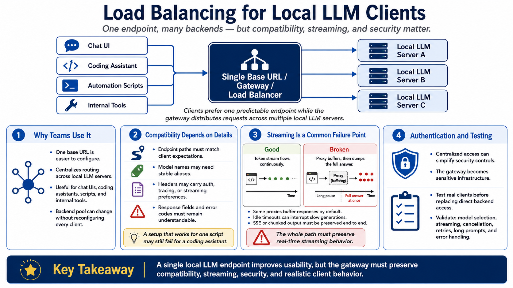

Client Compatibility and API Design
Connecting to LMS... Progress: in progress

Narration
Many teams use a load balancer because clients want one endpoint. Chat UIs, coding assistants, automation scripts, and internal tools are easier to configure when they all call a single base URL. A reverse proxy, gateway, or load balancer can present that endpoint while distributing work across multiple local LLM servers.
Compatibility depends on details. Endpoint paths must match client expectations. Model names may need stable aliases. Headers may carry authentication, tracing, or streaming preferences. Response fields and error codes should remain understandable to the client. A setup that works for one script may still fail for a coding assistant if it changes streaming or error behavior.
Streaming compatibility is a common failure point. Some proxies buffer responses by default, turning an interactive token stream into a long pause followed by a complete answer. Others apply idle timeouts that interrupt slow generations. If a client expects server-sent events or chunked output, the entire path from client to backend must preserve that behavior.
Authentication and testing belong in the design. A local endpoint may process source code, private documents, prompts, outputs, and accidental secrets. Centralizing access can simplify controls, but it also makes the gateway sensitive infrastructure. Before replacing direct backend connections, test the real chat UI, coding assistant, scripts, model selection, streaming, cancellation, retries, long prompts, and error handling.